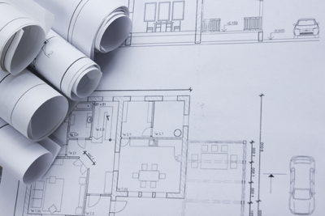

Our Process
The Formula We Follow To Guarantee Your Project's Success
- Every client has two senior engineers knowledgeable about all work being performed on behalf of a Client. Workload for a client is divided between the two senior engineers as appropriate. For any particular project, a primary senior engineer is assigned and maintains responsibility for all project elements. The second senior engineer’s role is to receive updates on project progress and to provide broad oversight of the work being performed. This serves three purposes:
- It ensures that the work product produced for a client is consistent with the Client’s preferences and requirements.
- Since the second senior engineer has a working knowledge of work being performed, it ensures that the Client always has a point of contact for questions, problems etc. A Client is never left waiting on Municipal Consultants because an engineer is on vacation, out sick, etc.
- This approach ensures that as institutional knowledge is gained over time, that knowledge is not lost if a senior engineer leaves the Company (which has rarely happened at MCI), becomes disabled, or is otherwise unable to provide the level of service we demand.
- What you see is what you get. We focus on being highly disciplined engineers first and foremost. We do not employ a marketing or advertising staff. The people you meet from our firm are the people that are responsible for the work. Our reputation of quality and integrity is what grows our business. We have grown slowly over 35 years by taking time to build quality experienced staff. Although this takes time, in the end, it’s our clients who benefit from this approach.
- All design work is performed locally by our in house staff. We do not subcontract engineering work to other firms or to other “design shop” offices. Any subcontract work is infrequent and is generally limited to minor trades such as HVAC, plumbing, etc. For critical or unique structures such as deep pier foundations, multistory buildings, etc. we will occasionally hire a third party firm to double check our design, but we retain overall design responsibility and oversight. Additionally, for boundary survey work (we do our own topographic and site survey), geotechnical services, and sanitary sewer flow monitoring, we either subcontract the work or work with a firm of the Client’s choosing.
- Treat the Client’s money, time and resources as if they were your own. For us to be successful in developing long term working relationships and providing the highest level of service, we must place ourselves in a Client’s shoes. To accomplish this, we listen to the client and their staff. If a problem has a simple, inexpensive solution, we’ll advocate that solution. If asked for our opinion we’ll give our honest opinion. What we won’t do is advocate the “latest and greatest” just to generate work. Our firm is built on long term relationships and those relationships require that you, as a Client have absolute confidence that our work is always done in your best interest.